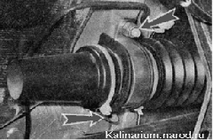
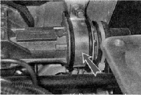
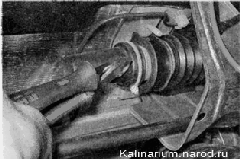
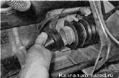
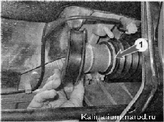
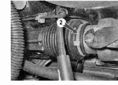
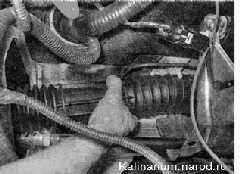

Защитный чехол рулевого механизма - заменаДля выполнения работы потребуются новые пластмассовые хомуты крепления защитного чехла рулевого механизма. Снятие 1. Отсоединяем промежуточный вал рулевой колонки от рулевого механизма. Во избежание повреждения контактного кольца на автомобилях с подушкой безопасности в рулевой колонке зафиксируйте рулевой вал от вращения. 2. Отсоединяем от рулевого механизма рулевые тяги. 3. Торцовым ключом на 13 мм с трещоткой отворачиваем две гайки скобы правого крепления рулевого механизма и снимаем скобу.  4. Аналогично снимаем скобу левого крепления рулевого механизма. 
5. Бокорезами разрезав хомут... 
...снимаем защитный колпак рулевого механизма. 6. Снимаем правую опору. 7. Бокорезами перекусываем два пластмассовых хомута крепления защитного чехла рулевого механизма с правой 1 и левой 2 сторон рулевого механизма  8. Снимаем защитный чехол картера рулевого механизма. 
Установка 1. Закладываем во внутреннюю полость картера рулевого механизма смазку ФИОЛ-1. 2. Надеваем защитный чехол па корпус рулевого механизма. Фиксируем его новыми хомутами. 3. Надеваем на рулевой механизм правую опору и защитный колпак. Фиксируем колпак рулевого механизма новым хомутом. 4. Крепим на рулевой механизм скобами. Гайки скоб затягиваем моментом 15—18,6 Н-м (1,5 — 1,9 кгс-м) 5. Крепим к рулевому механизму тяги. 6. Крепим промежуточный вал рулевой колонки к валу рулевого механизма. |